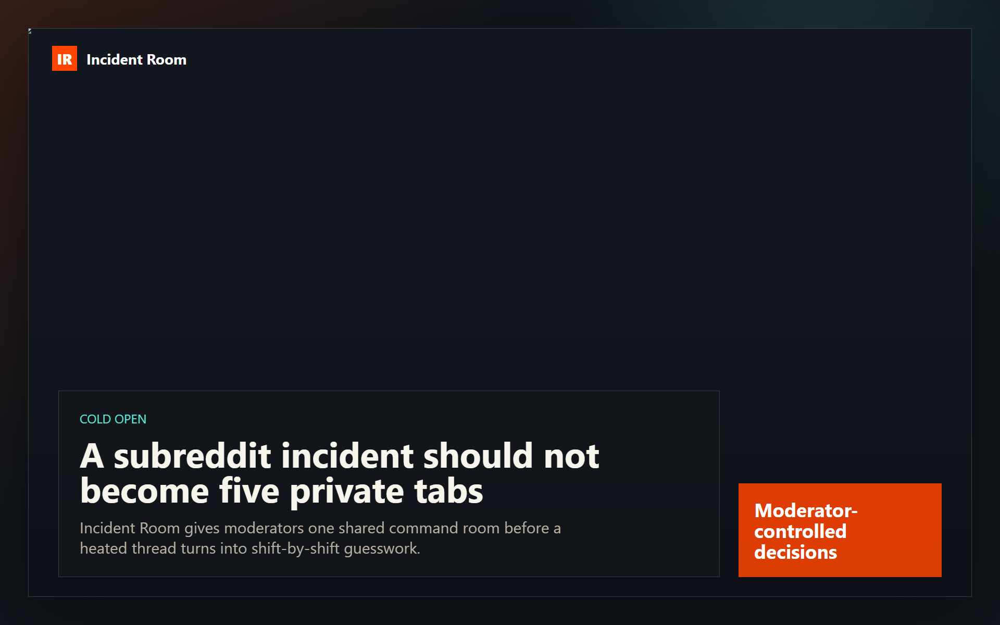
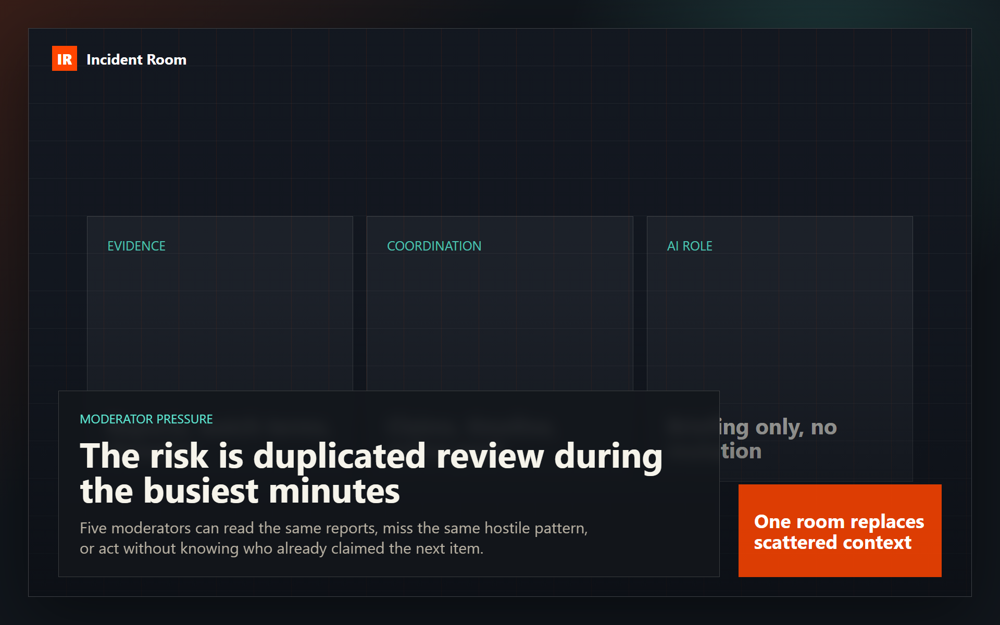
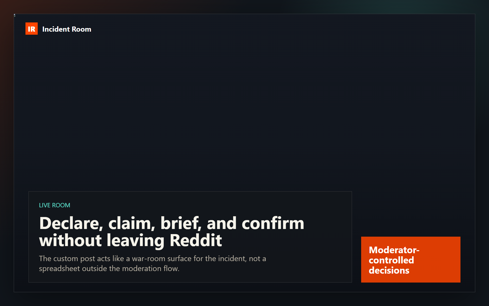
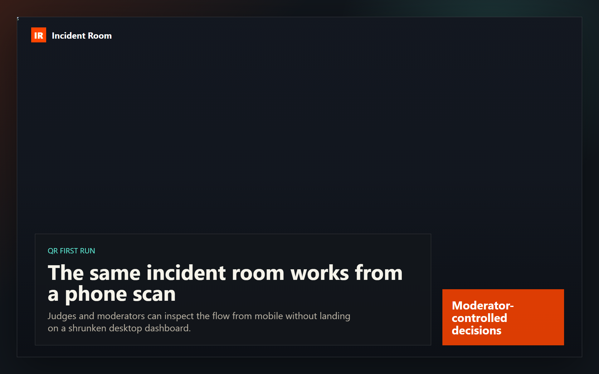
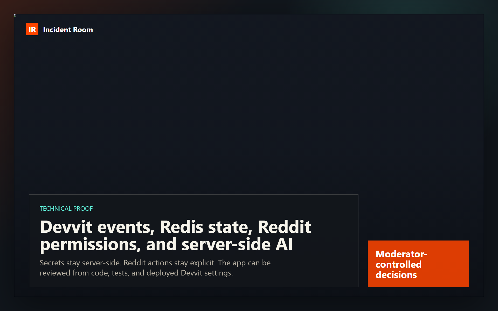
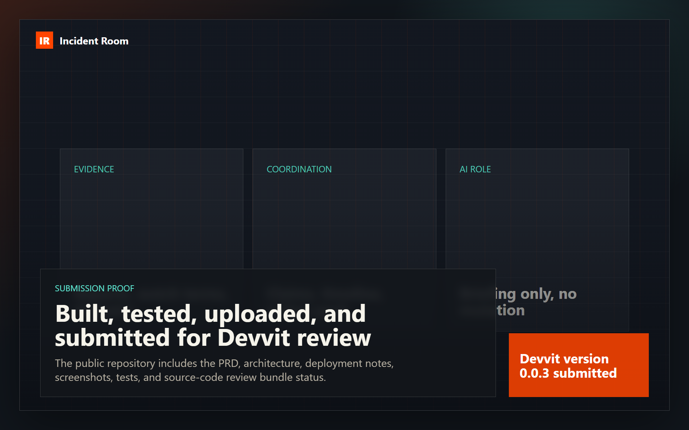
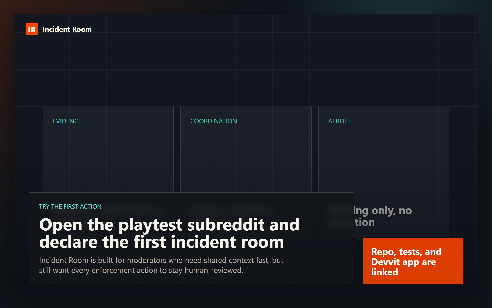

Incident Room combined pitch/demo
Final render: ../recording/pitch-demo-combined-final.mp4 · 192.23s · 1920x1200

Cold open
A subreddit incident should not become five private tabs
22.67s

Moderator pressure
The risk is duplicated review during the busiest minutes
22.79s

Live room
Declare, claim, brief, and confirm without leaving Reddit
22.98s
Rules plus AI
Rules score the evidence; Step AI explains the shape of the incident
29.51s

QR first run
The same incident room works from a phone scan
19.91s

Technical proof
Devvit events, Redis state, Reddit permissions, and server-side AI
26.2s

Submission proof
Built, tested, uploaded, and submitted for Devvit review
28.74s

Try the first action
Open the playtest subreddit and declare the first incident room
19.43s